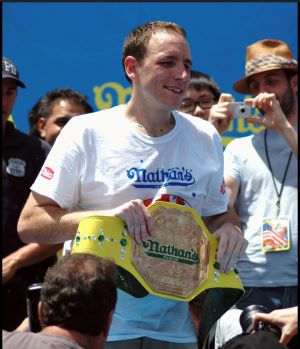
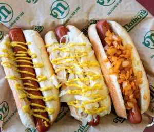

Professional hot dog eating is a unique and captivating sport that has gained a fervent following for several compelling reasons. At its core, it combines elements of athleticism, strategy, and sheer determination, making it a truly distinctive spectacle. Competitors push the boundaries of human consumption, demonstrating their exceptional capacity to devour an impressive number of hot dogs within a limited timeframe. This spectacle challenges conventional notions of athleticism, highlighting the diverse ways in which individuals can excel in sports. Unlike traditional sports, where physical prowess is the primary factor, hot dog eating showcases the remarkable capacity of the human body to adapt and perform under unusual circumstances.
What sets professional hot dog eating apart from other sports is its accessible and relatable nature. While spectators may not possess the elite physical attributes of traditional athletes, they can still connect with the competition on a personal level. Nearly everyone has enjoyed a hot dog, making the sport's subject matter relatable and engaging. This inclusivity allows fans from all walks of life to become enthralled by the astonishing feats of the competitors. Moreover, the strategic element of the sport cannot be overlooked. Contestants must master the art of pacing themselves, finding the delicate balance between speed and endurance to maximize their intake. This interplay between physicality and strategy adds a layer of complexity that keeps spectators eagerly watching, solidifying professional hot dog eating as an enthralling and unforgettable sport.


| Why this contest is fun | Why its not |
|---|---|
| Coney Island | You hate happiness |
| Its cheap to attend | You stink |
| So much food | No good reason |